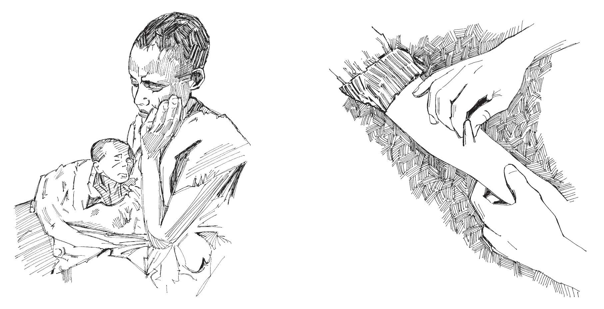

Niño deshidratado. Pellizcar la piel.
| Etapa de deshidratación | Signos | Tratamiento |
|---|---|---|
| Sin deshidratación | La piel recupera su forma normal cuando se pellizca; la sed ha disminuido; se pasa orina; el pulso es fuerte. | Solución de rehidratación oral (SRO) en el hogar; suplementos de zinc para niños hasta los 15 años. |
| Deshidratación moderada | Inquietud e irritabilidad; ojos hundidos, boca y lengua seca, aumento de sed; la piel recupera su forma normal lentamente cuando se pellizca; orina reducida, lágrimas disminuidas; fontanelas deprimidas en bebés. | SRO y vigilancia muy cercana; suplementos de zinc para niños hasta los 15 años. |
| Deshidratación severa | Letargo o inconsciencia; boca y lengua muy secas; la piel recupera la forma muy lentamente cuando se pellizca (“carpa”); pulso débil o ausente; presión arterial baja; Orina mínima o nula. | En un centro de salud o en un hospital: terapia IV más antibióticos más SRO; suplementos de zinc para niños hasta los 15 años. |